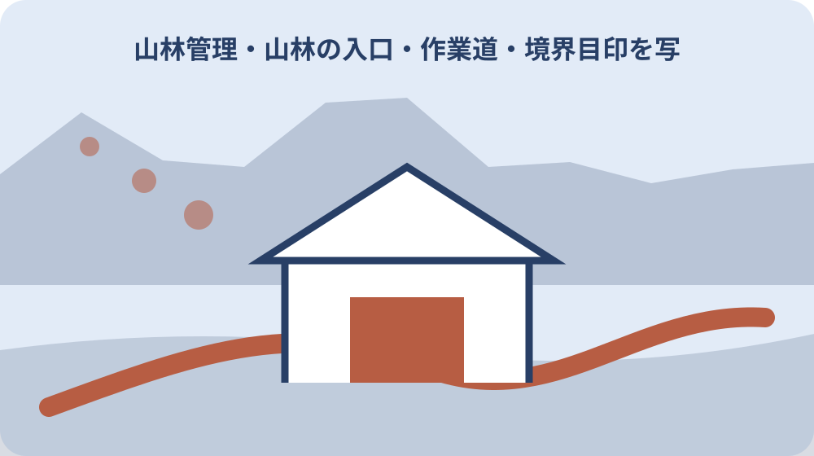
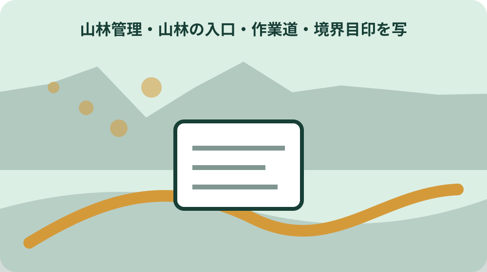

先に結論を確認する
この記事の答え：林野庁は個人・法人や面積を問わず、売買や相続等で地域森林計画対象森林を取得した人を届出対象としています。対象地番か森町へ確認します。
森町で最初に照合する条件：写真地図は現地到達と窓口説明の補助に使い、境界確定図や通行権の証明として扱わない。
対象山林を一筆単位で台帳へ置く
山林を家族が通称で『北の山』と呼んでいても、登記や届出は土地の所在と面積を扱います。まず取得書類、登記事項、課税資料から地番表記を資料別に転記し、一筆ごとの管理番号を付けます。
隣り合う複数筆が同じ林相に見えても一つにまとめません。取得原因や名義、面積、届出期限が筆ごとに違う可能性があります。写真地図上の色も筆候補ごとに分けます。
台帳には地番、面積、登記地目、取得日、取得原因、前所有者、新所有者、資料番号を置きます。分からない欄は推測値で埋めず、確認先と期限を付けた未確認にします。
固定資産税資料だけで現地位置が特定できない場合は、地図上の候補へ点線を置きます。家族の記憶には聞取者と日付を付け、書類上の地番と一致した事実にはしません。
原本は山へ持参せず、現地用には必要最小限の位置図と管理番号を用意します。紛失しても所有者の個人情報が広がらないよう、戸籍や契約書の全写しを現地鞄へ入れません。
台帳の先頭には、この一覧が境界確定や通行許可を示すものではないと明記します。家族が資料を受け取った時に、確認済みの地番と現地候補を混同しないよう、確度の凡例も同じ頁へ置きます。
取得日と90日届出を先に確認する
森町と林野庁は、森林の土地を新たに所有した人に市町村長への届出を求めています。期限は所有者となった日から90日以内です。現地境界が全部分かるまで届出確認を後回しにしません。
取得原因には売買、相続、贈与などが含まれ、個人・法人や面積の大小を問わないと案内されています。小さな山林だから不要、家族内相続だから不要とは判断しません。
相続では何の日を取得日として扱うか、手元資料を示して森町へ確認します。家族が書類を見つけた日と権利を取得した日は同じとは限らないため、台帳に複数の日付候補と根拠を残します。
90日を過ぎている可能性があれば、遅れを隠すため日付を変えず、取得資料と現状を窓口へ説明します。届出要否、必要書類、提出方法について現在の案内を受けます。
届出完了と不動産登記完了は別です。林野庁は森林所有者届出を不動産登記と別制度と明記しています。家族台帳でも二つの進捗欄を分け、一方で双方を完了にしません。
登記地目と森林計画対象を分けて確かめる
届出対象は都道府県が定める地域森林計画の対象森林です。登記簿の地目が山林と書かれているだけで対象確定とせず、対象地番を森町または県の林務担当へ示して確認します。
林野庁は登記地目にかかわらず、取得土地が森林状態なら対象となる可能性が高いと注意しています。原野や雑種地の表記でも、現地が森林なら自己判断で除外しません。
逆に写真で樹木が見えるだけで地域森林計画対象と断定もしません。撮影地点、地番候補、現況を整理し、対象照会の回答日、担当部署、資料名を台帳へ残します。
対象区域図の縮尺が粗い場合は境界線を現地へ直接落としません。区域該当の確認と、個人所有地の筆界確認は目的が違うため、それぞれの資料と相談先を分けます。
登記地目、課税地目、現況、森林計画対象の四欄を並べると、どの資料の言葉か分かります。相違を一つへ修正するのではなく、各制度の基準時点と用途を確認します。

入口候補を道路側から撮影する
最初の現地確認は山中へ入ることではなく、公道など安全に立てる側から入口候補を探すことです。車の停車可否、道路幅、側溝、門扉、標識、急斜面を確認し、入口番号を付けます。
入口写真は道路から山側、山側から道路方向を別にします。撮影日、向き、立位置を地図へ置き、草の繁茂や工事で外観が変わっても同じ場所を再確認できる目印を選びます。
古い鍵、柵、チェーンがあっても所有者を推定しません。壊したり越えたりせず、表示、連絡先、近隣から得た情報を記録し、通行できる根拠を管理者へ確認します。
路肩に車を止められるように見えても、交通安全や他者利用を確認します。同行者を降ろす場所、車を回す場所、緊急車両の妨げにならない位置を現地図へ別記します。
入口が複数ある場合は近さだけで選びません。通行権、傾斜、路面、倒木、隣接地の横断、携帯電波を比較し、確認済み条件が最も多い入口を家族用の候補にします。
作業道の分岐と通行条件を記録する
入口から先は分岐ごとに番号を振り、来た方向と進む方向を撮ります。似た林道では帰路写真だけでも迷うため、分岐手前の目印、距離、標高差の候補を地図へ記します。
作業道に見える道が対象地内とは限らず、他人の森林や共同利用道の可能性があります。道の存在を自由通行の根拠とせず、所有・管理、鍵、利用日、車両条件を確認します。
路面状態は乾燥時と雨後で変わります。轍、崩れ、倒木、落石、水流、幅員を写真にし、普通車、軽トラック、徒歩の可否を家族の経験だけで断定しません。
進行不能地点では無理に迂回路を作らず、位置と理由を記録して引き返します。倒木を切る行為も伐採に関わる可能性があるため、土地・立木の所有と必要な確認を先に行います。
作業道記録には確認者、同行者、開始・帰着時刻を付けます。次回訪問者へ『通れる』とだけ渡さず、確認日、天候、車種、進入した終点を限定して共有します。
境界標ではなく境界候補として写す
杭、石、古い柵、樹種の変化を見つけても境界標と断定しません。写真番号、位置候補、形状、周囲の目印、誰から聞いたかを記録し、台帳では境界候補と呼びます。
一つの杭から直線を延ばして筆界を描かず、複数資料と専門的確認が必要な線を点線にします。写真地図は家族や窓口へ質問するための資料で、境界確定の成果物ではありません。
隣接所有者から説明を受けた場合は、発言内容を自分の結論へ変えず、日付と同席者を残します。口頭説明を無断録音・公開せず、確認したい線を地図上の番号で共有します。
境界候補付近の枝払いや標識設置を勝手に行うと、他者の土地や立木へ影響するおそれがあります。目印を保全したい場合も所有者・管理者へ方法を確認します。
位置情報機器の誤差も記録します。スマートフォンの点を法的な座標として扱わず、端末、測位時刻、電波状況を補助情報にし、正式資料との差を確認事項へ戻します。
境界候補写真は近景だけでなく、そこへ至る分岐からの連続写真を残します。杭のような物だけを切り出すと別地点と取り違えやすいため、周辺の斜面、沢、樹木、道との位置関係を番号で結びます。
撮影点と方向を一枚の地図へ結ぶ
写真ファイル名を管理番号、撮影点、方向、連番で統一します。地図上には撮影点と矢印を置き、画像だけ見てもどちらを向いたか分からない状態を避けます。
地図は公表された基図の出典と作成日を残します。航空写真、道路地図、登記関係図面を重ねた場合も、それぞれの精度と目的が違うことを注記し、一枚で境界を証明できると表示しません。
入口、分岐、危険箇所、境界候補を色と記号で分けます。色だけでは印刷時に区別できないため、E1、R2、H3、B4など文字番号を併記し、写真索引と一致させます。
公開共有版から所有者の住所、電話、鍵情報を外します。家族限定版にも必要最小限だけを残し、届出書や登記事項の写しは別の保護された保管先へ置きます。
更新時は古い写真を消さず、版番号と撮影日で比較できるようにします。入口閉鎖、倒木、道の崩れがあれば最新版の注意欄へ移し、古い安全情報を現行と誤認しない表示を付けます。
安全装備と帰着連絡を決める
山林確認は単独で行わず、行先地番候補、入口、予定経路、帰着予定を留守担当へ渡します。通信圏外を想定し、予定時刻を過ぎた場合の連絡順と捜索を始める判断者を決めます。
服装、靴、飲水、地図、予備電源、救急用品を準備し、天候や日の入りを確認します。装備があっても急斜面、増水、落雷、倒木、獣の痕跡があれば中止する基準を先に置きます。
撮影に集中して足元を見失わないよう、撮影者と安全確認者を分けます。斜面上で後退しながら撮らず、安全な場所から遠景を残し、必要な近接確認は専門作業へ回します。
私有地立入りの同意と安全性は別条件です。所有者が家族でも、管理されていない道や崩落地へ入れる保証はありません。初回は土地に詳しい人や適切な事業者への同行相談を検討します。
帰着後は全員の無事、鍵、装備、写真数を確認します。ダニやけがの点検を行い、現地で判断できなかった危険箇所を次回の中止条件へ反映します。
伐採や整備の前に森町へ相談する
森町は森林の伐採前に役場へ事前相談するよう案内しています。自分の土地の倒木や作業道整備でも、伐採方法や対象森林によって届出不要または別手続きの可能性があるため、先に確認します。
相談には地番、所有者資料、位置図、伐採候補の写真、目的、面積候補、時期を準備します。『入口を広げたい』だけでなく、どの木をどの範囲で扱うかを番号で示します。
町の伐採案内は土地・立木所有者等の住所確認資料として登記事項証明書等を挙げています。土地所有者と立木所有者が同じと推測せず、確認できた資料を相談へ持参します。
事業者の見積りを得たことを届出確認の代わりにしません。町への相談回答、必要様式、提出期限、事業者の作業範囲を並べ、開始条件がそろってから契約日程を決めます。
危険木で急ぐ場合も、緊急性の写真と位置を示して対応方法を尋ねます。自己判断で伐採し後から届出る前提にせず、連絡した日時と窓口回答を記録します。

所有者届出資料と写真地図を対応させる
林野庁は届出書に所有権移転年月日、原因、前所有者、新所有者、所在、面積、用途等を記載すると案内しています。写真地図の管理番号を所在欄の資料と対応させ、画像だけを提出資料にしません。
添付には権利取得を示す書類の写しと土地位置を示す図面が必要です。契約書や登記事項の写しは取得事実、写真地図は現地説明という役割を分け、互いを代替しません。
2026年4月1日以後の様式では国籍等の記載事項が追加されます。古い保存様式を再利用せず、提出時点の森町または林野庁案内から現行様式を取得します。
位置図には対象筆候補を明示しますが、境界未確認ならその旨を注記します。町が求める図面の縮尺や部数、提出方法を確認し、家族用写真帳をそのまま正式添付にしません。
提出後は受付日、提出先、控え、追加確認、完了状態を台帳へ戻します。届出が済んでも入口や境界の調査は別課題として残し、行政届出完了を山林管理完了にしません。
家族へ渡す版と更新履歴を管理する
家族用地図には版番号、作成日、作成者、対象地番候補、現地確認日を表示します。画像をチャットへ再送するたび別版を作らず、最新版の保管先を一箇所に決めます。
変更履歴には入口閉鎖、道の崩れ、境界候補追加、窓口回答、届出進捗を分けて書きます。地図線を動かした理由と根拠資料を残し、見た目だけを静かに修正しません。
現地訪問者へ渡す版から不要な権利資料と個人情報を外します。相談担当版には地番と資料番号を加え、作業事業者版には許可された経路と作業範囲だけを示します。
再確認日は台風、大雨、伐採、所有者変更、長期未訪問を契機に設定します。毎年同じ月に写真を撮るだけでなく、危険が増えた時は現地へ入らず遠景確認と管理者連絡へ切り替えます。
引継ぎ時は地図ファイルだけでなく、未確認事項、問い合わせ先、次の期限、中止条件を説明します。新担当者が一人で探索を再開しないよう、初回同行者も決めます。
大石の視点：写真は境界証明でなく次の質問を作る
公的事実として、森林所有者届出には取得日から90日の期限があり、所在と面積、権利取得資料、位置図が必要です。森町は伐採方法等により届出の扱いが変わる可能性を示し、事前相談を案内しています。
ここからは私見です。山林の不動産相談では、杭らしい写真やスマートフォンの点を見つけた瞬間に境界が分かったと感じやすいものです。しかし写真は撮影者が見た一場面で、権利や通行を証明しません。
写真の価値は、入口がどこか、次の分岐はどちらか、危険は何か、町や専門家へ何を聞くかを家族間で再現できることにあります。断定語を避けた番号付き地図の方が、後の確認を正確にします。
期限のある所有者届出と、時間を要する境界確認を同じ完了条件にすると、どちらも止まりがちです。届出資料をそろえる線、安全な現地把握の線、境界の専門確認の線を分けて進めるのが私の勧めです。
家族間で場所が違うと言われた場合は、多数決で地図線を決めません。それぞれが根拠にした資料、記憶、現地目印を別の候補として保存し、窓口や専門家へ同じ番号で質問できる形にすることが重要です。
今日できる一歩は、取得書類から一筆の地番と取得日を転記し、90日届出の要否を森町へ尋ねることです。現地へ行く前に入口候補を地図で一つ置き、立入り許可と安全条件を確認します。